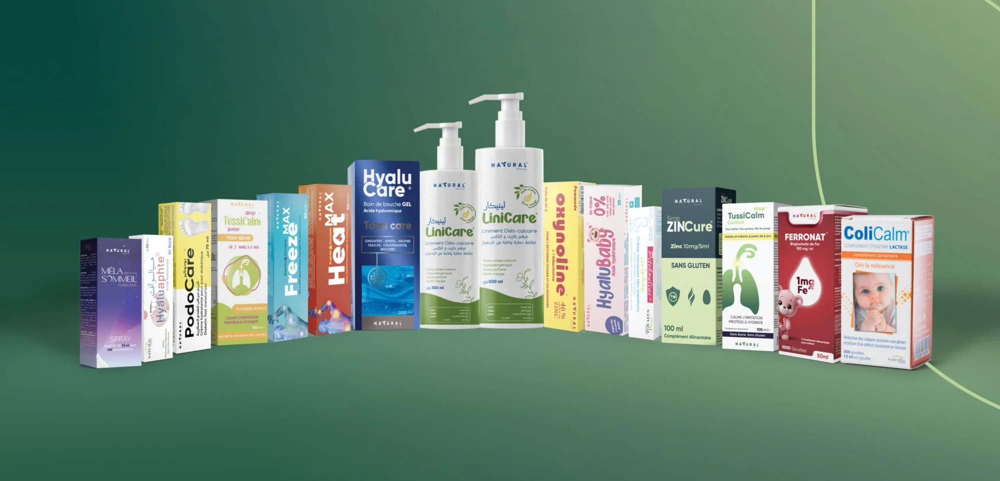

A natural-origin story that still had to read as clinically credible — botanical enough to be believed, disciplined enough not to tip into decoration.
Three leaves, arranged to form the letter T.
Six formats — horizontal, vertical, compact, social, print, simplified. A mark that appears on a jar lid, a pharmacy shelf and a phone screen is really three marks; drawing all six up front stopped the brand improvising them later.
Gilroy — humanist enough to carry the botanical claim, geometric enough to hold the clinical one.
Deep ocean blue against yellow-green, and the green is never allowed to stand alone. That single rule is what keeps the range out of health-food territory.
Direction across a catalogue that grew past thirty products without the system being redrawn once.
Promotional and presentation templates, so three years of output stayed recognisably one brand.

A flexible identity built to scale alongside the brand’s expanding catalogue — and it has, for three years.